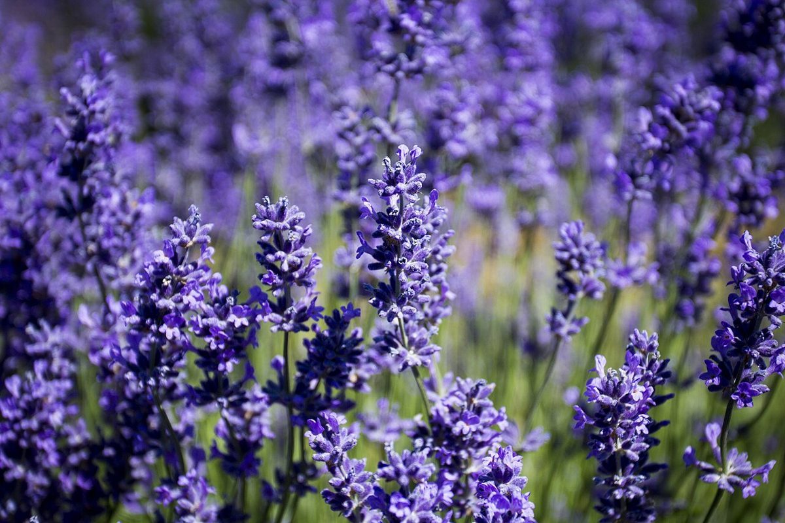
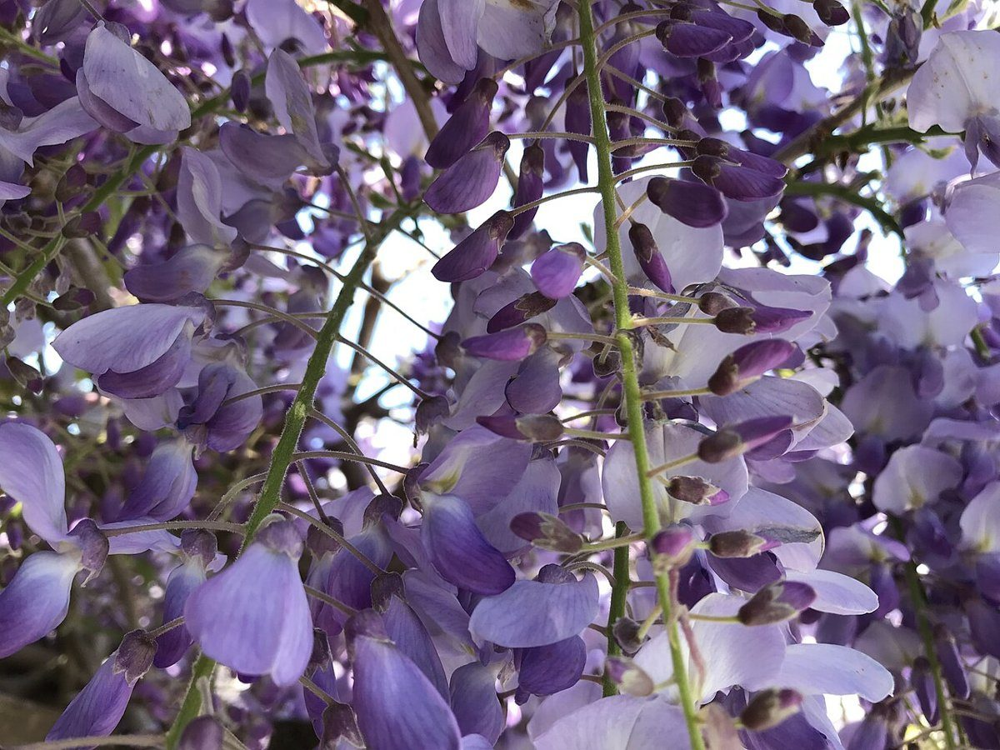
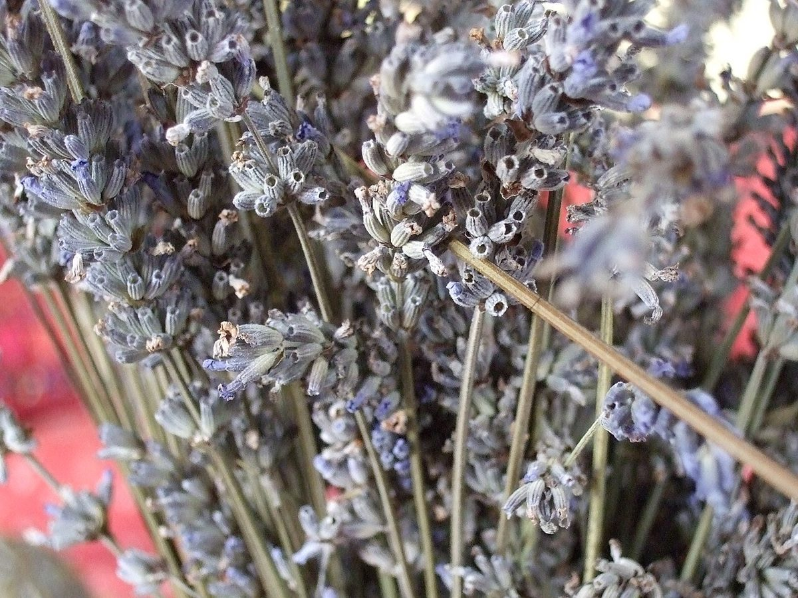

Patisserie+Cafe / 栃木県栃木市本町
Patisserie
+CafeMAUVE
栃木県栃木市本町にあるパティスリー・カフェ「Patisserie+Cafe MAUVE」のご案内ページです。営業時間やメニューなど詳しいことは準備中です。まずはInstagramをのぞいてみてください。

制作側の連想
一本の瓶から、五回の試し書き
屋号の「MAUVE」から、紫がかった淡い色(モーヴ)を連想しました。そこから、インク瓶に筆を浸して試し書きをするように、薄い色から濃い色へ五つのページを並べる構成にしています。制作側の連想で、お店の理念・由来とは無関係です。
イメージ写真
淡い紫と、甘い色
写真は栃木市やお店のものではありません。「MAUVE」という色の連想で選んだ、国外または撮影地不明のフリー素材です。




ご案内
お店のこと(確認できたものだけ)
| 所在地 | 〒328-0034 栃木県栃木市本町1-20 |
|---|---|
| 電話 | なし |
| 営業時間 | 準備中 |
| 定休日 | 準備中 |
| ご予約 | 準備中 |
| 駐車場 | 準備中 |
| SNS | Instagram @patisseriemauve |